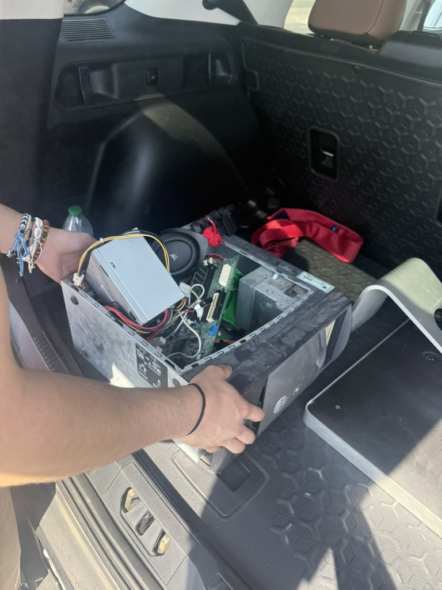
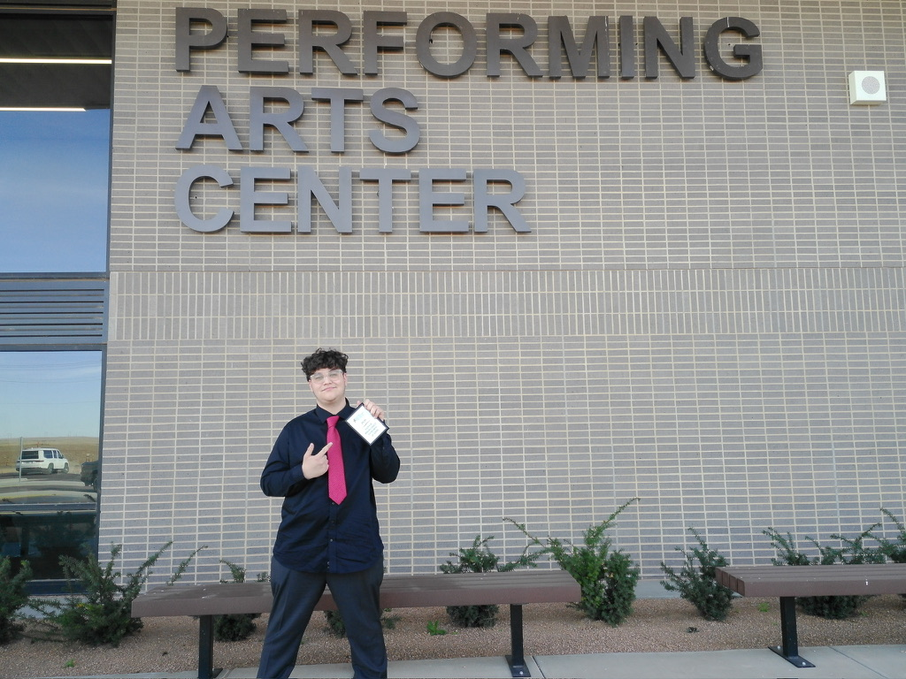

Accomplishments
- Affilated with the National Honor Society
- University Interscholastic League Computer Science Reigon 3rd place finisher
- Two-time UIL Computer Science Reigonal Competition Qualifier
- Honor Roll candidate for Fall 2024 at Frank Phillips College
- Two time Texas Forensic Association State Tournament Qualifier
- Two time National Speech and Debate Association National Tournament Qualifier
Public Service
Led a community service initiative to address electronic waste (e-waste) at our high school by collecting unused and outdated devices and ensuring their responsible recycling. The project raised awareness among school administrators about proper e-waste disposal, a growing concern as technology becomes increasingly integrated into education.
This project reinforced the importance of early planning and broad stakeholder engagement. While the number of devices collected was smaller than anticipated due to slow administrator response times, the team successfully completed the recycling mission and built foundational knowledge around sustainability. If repeated, the team would extend the outreach timeline and contact a wider group of administrators to maximize impact.

